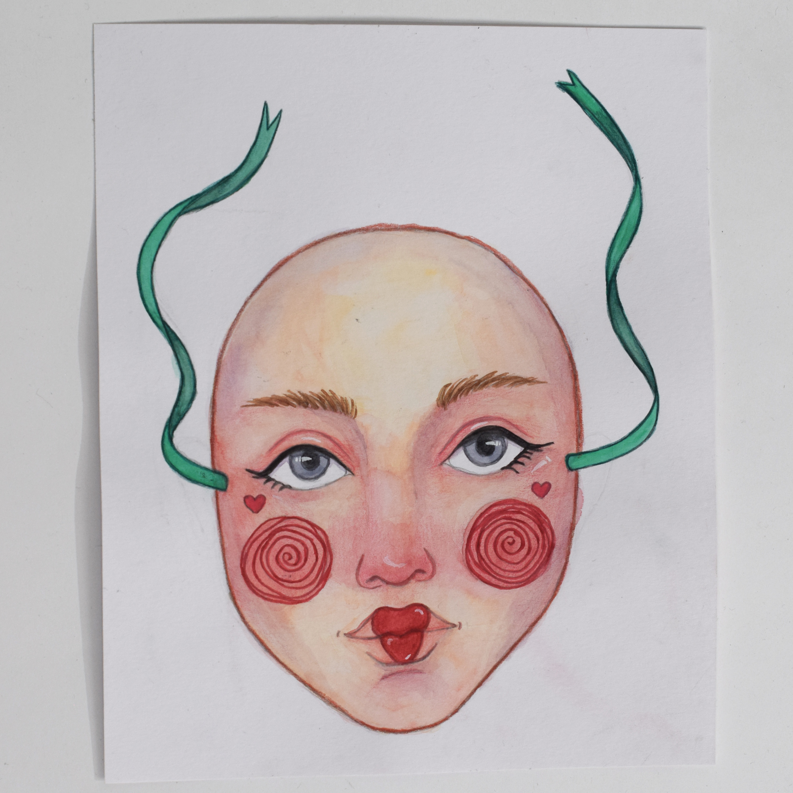
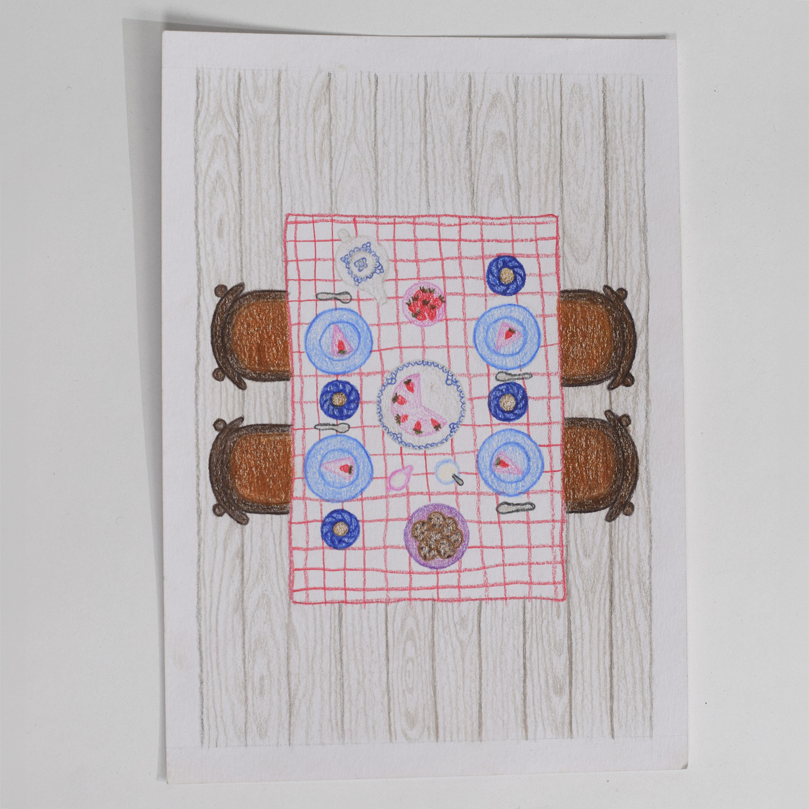
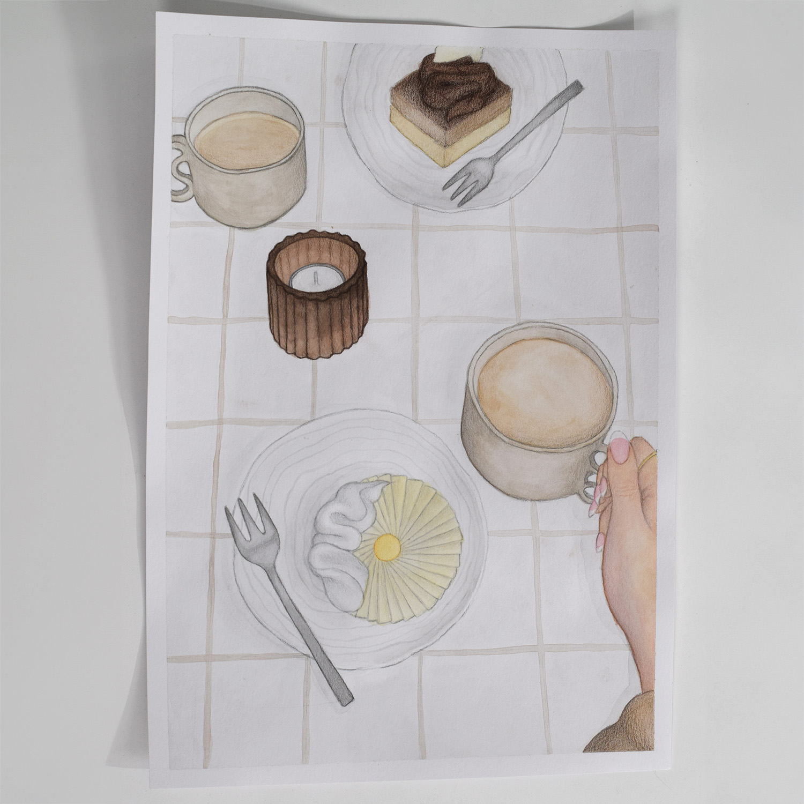

Illustrationer
Udover min forkærlighed for digitalt design, så elsker jeg også den mere analoge proces. Så for mig starter de fleste af mine digitale designs med papir og blyant. Her har jeg mulighed for hurtigt at udforske og visualisere mine idéer, samtidig med at de oftest udvikler sig til endnu flere idéer undervejs.
At tegne og være kreativ er noget jeg har gjort siden jeg var helt lille, formentlig også inspireret af min mor der er Indretningsarkitekt og Møbeldesigner. Men efterhånden som jeg er blevet ældre, har jeg fundet min stil i kombinationen af den meget diffuse akvarel og de præcise farveblyanter.
Mange af mine nyere illustrationer er lavet ud fra mine egne fotografier, som minder mig om et bestemt øjeblik med personer, der betyder noget for mig.


